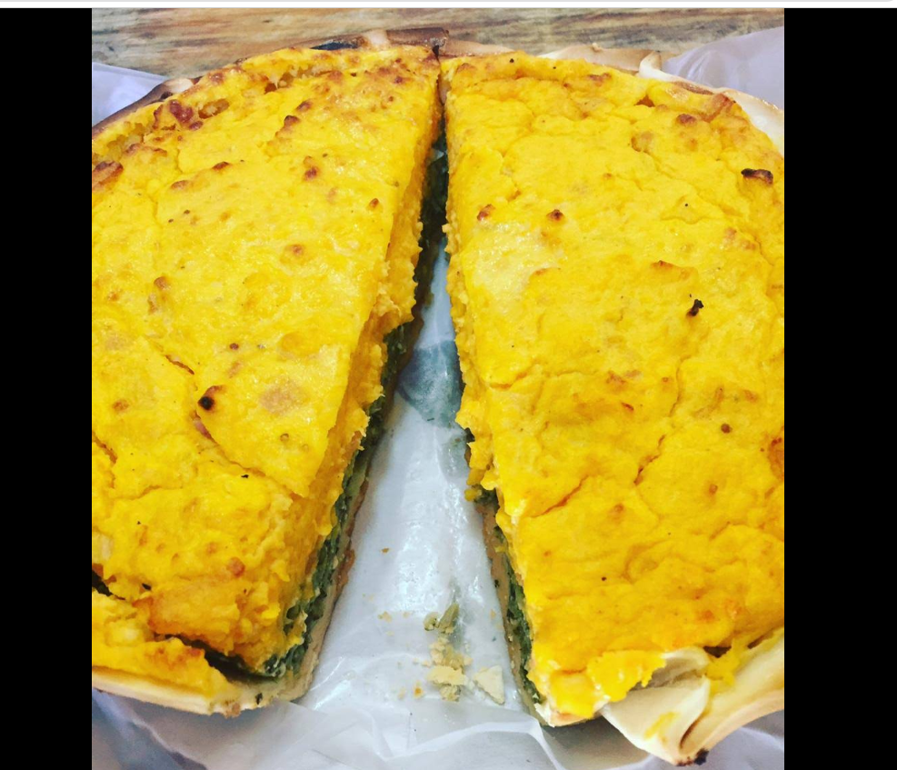
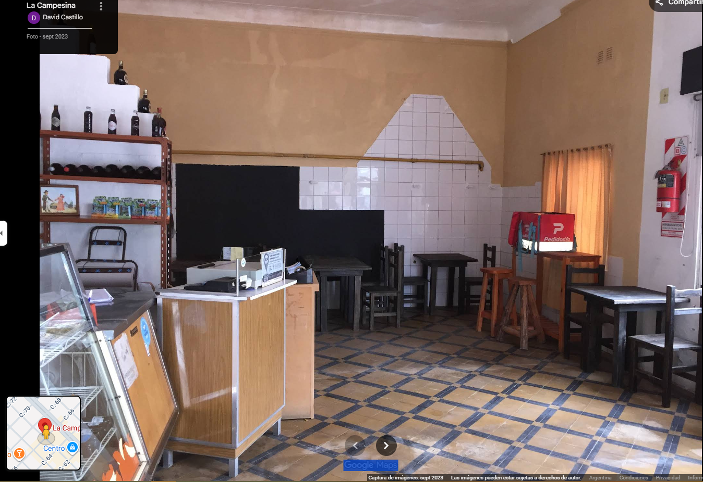
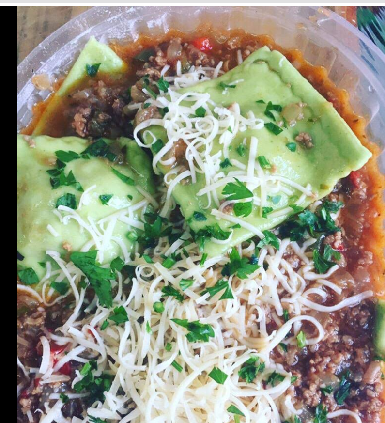
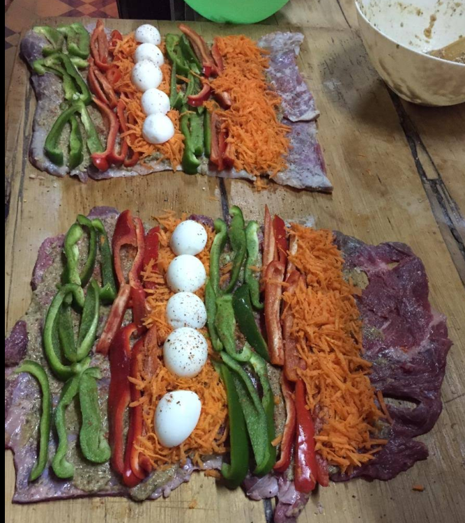
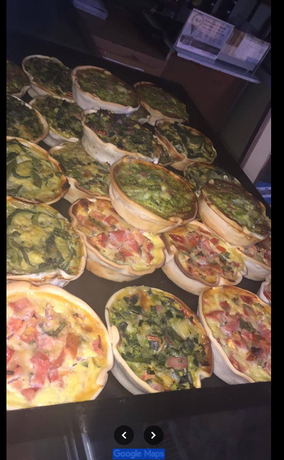

🕐 Todos los díasMenú del Día
Todos los días un menú completo, rico y a buen precio. Plato principal y guarnición. La mejor opción para el almuerzo.
¿Cuál es hoy?Sorrentinos, minutas, menú del día y más. Hecho con amor, ingredientes frescos y recetas de siempre.

"La cocina casera no se inventa, se hereda."
En la esquina de la calle 66 y 61, en el corazón de Necochea, La Campesina lleva años cocinando como en casa. Cada plato que sale de nuestra cocina tiene la misma dedicación que ponía la abuela: ingredientes frescos del día, recetas que pasan de generación en generación y porciones que llenan el alma.
No somos una cadena ni un local más. Somos parte del barrio. Conocemos a nuestros clientes por su nombre y sabemos lo que les gusta pedir. Eso es lo que nos hace diferentes: la calidez de lo auténtico, el sabor de lo hecho a mano, y el orgullo de mantener viva la tradición de la cocina argentina.
Calle 66 esquina 61, Necochea
Buenos Aires, Argentina
Tips y secretos para que cocines como los profesionales

Las recetas de pastas que hacemos en La Campesina, con todos los secretos para que te queden perfectas.
Ver recetas →
Las minutas de siempre, con el toque casero que las hace irresistibles. Recetas fáciles y rendidoras.
Ver recetas →
Masa crocante, rellenos generosos y el sabor de siempre. Ideales para compartir en familia.
Ver recetas →